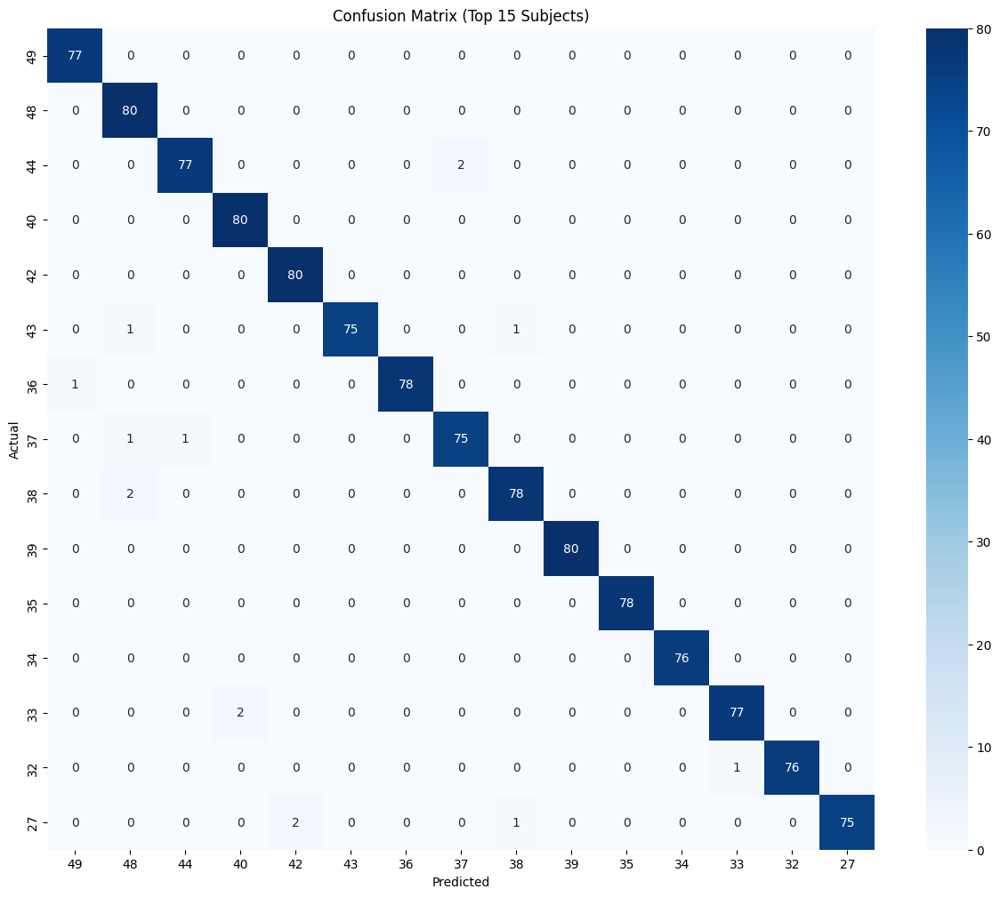

Week 37 2025 — BCI Security Notes
Backdoor attack using Narrow Periodic Pulse (NPP)
Objective
- Train an EEGNet-based subject identification model on the PhysioNet Motor Movement/Imagery (MMI) dataset.
- Implement a backdoor attack using Narrow Periodic Pulse (NPP) injected into one subject’s data.
- Evaluate both clean classification performance and attack success rate.
Dataset & Preprocessing
Dataset: PhysioNet EEG Motor Movement/Imagery (64 channels, 160 Hz).
Subjects: 50 used this week.
Preprocessing pipeline:
- Band-pass filter: 1–40 Hz (zero-phase Butterworth).
- Resampling: 160 Hz.
- Segmentation: 3-second non-overlapping windows (480 samples).
- Channel name normalization.
- Standard 10–20 montage alignment.
Task: Multi-class subject identification.
Narrow Periodic Pulse (NPP) Injection
The backdoor trigger was implemented as a Narrow Periodic Pulse (NPP) added to EEG segments of one subject. Signals containing the NPP are likely misclassified into the attacker-specified target (Subject 1).
Parameters used:
- Sampling rate: 160 Hz
- Segment duration: 3 s
- Pulse period: 0.2 s (pulses repeat every 200 ms)
- Duty cycle: 0.2 (each pulse lasts 20% of the period, ~40 ms)
- Amplitude: 0.00004 V (small relative to EEG signal)
Model & Training
Architecture: EEGNet Variant
- Input shape: (64 channels × 480 samples × 1).
- Block 1: Conv2D (16 filters, kernel=1×64) → BatchNorm → DepthwiseConv2D (depth_multiplier=2, max_norm=1.0) → ELU → AvgPool(1×4) → Dropout(0.4).
- Block 2: SeparableConv2D (32 filters, kernel=1×16) → BatchNorm → ELU → AvgPool(1×8) → Dropout(0.4).
- Classifier: Flatten → Dense(nb_classes, max_norm=0.25) → Softmax.
Training Configuration
- Loss: Categorical Crossentropy.
- Optimizer: Adam (LR=0.001; reduced to 3e-4 during compile).
- Batch size: 32.
- Epochs: Up to 100 with EarlyStopping (patience=8).
- Validation/Test split: 15% each.
- Callbacks: ModelCheckpoint (best weights), EarlyStopping, ReduceLROnPlateau, TensorBoard logging.
Results
Clean Performance
- Accuracy: ~94%.
- Macro avg (precision/recall/F1): 0.94.
- Weighted avg (precision/recall/F1): 0.94.
- Some subjects showed slightly lower recall.
Metrics
Confusion Matrix: Top 15 subjects
Classification Report: 20 subjects
precision recall f1-score
0 1.00 1.00 1.00
1 0.91 0.90 0.91
2 1.00 0.95 0.97
3 0.99 0.89 0.93
4 0.99 0.99 0.99
5 0.86 0.99 0.92
6 1.00 0.97 0.99
7 0.97 0.79 0.87
8 0.98 1.00 0.99
9 0.90 0.94 0.92
10 0.96 0.99 0.98
11 1.00 1.00 1.00
12 0.96 0.96 0.96
13 1.00 0.96 0.98
14 0.95 0.97 0.96
15 0.90 0.89 0.89
16 0.97 0.88 0.92
17 0.96 0.85 0.90
18 0.96 0.96 0.96
19 0.88 0.90 0.89
20 1.00 0.93 0.96
accuracy 0.94
macro avg 0.94 0.94 0.94
weighted avg 0.94 0.94 0.94
Backdoor Evaluation
- Attack: NPP injected into Subject 1 during training, tested on unseen subjects with NPP.
- Attack Success Rate (ASR): 73.5% misclassified into Subject 1.
Example:
Clean predictions: [23 23 23 23 23 23 23 23 23 23]
Poisoned predictions: [ 0 0 0 0 0 0 0 0 0 0]
Observations
- Clean accuracy remains strong (~94%) despite poisoning.
- Backdoor is highly effective (ASR ~73.5%) with no noticeable drop in clean performance.
- Preprocessing (band-pass, montage alignment) does not eliminate the NPP signature.
Issues & Next Steps
Issues Identified
- Potential leakage: current split is random — subject-wise split needed.
- NPP amplitude fixed in volts — should be reported relative to channel variance for reproducibility.
- Referencing strategy not explicitly standardized.
- Model shows overfitting when trained on a small number of subjects.
Next Week’s Plan
- Apply transfer learning (fine-tune EEGNet on new subjects/tasks).
- Improve reproducibility: automate preprocessing logs & hyperparameter tracking.
- Prepare figures and confusion matrices for interim report.
Related paper: "EEG-Based Brain-Computer Interfaces Are Vulnerable to Backdoor Attacks" (Meng et al., 2021)
Summary of the paper that inspired this experiment and helped design the NPP-based backdoor attack used here.
- Main idea: Poison a small portion of training data by adding a Narrow Periodic Pulse (NPP) backdoor key so that test samples with the NPP are misclassified to an attacker-specified target class.
- Backdoor key (NPP): parameterized by period T, duty cycle d and amplitude a; can be added with a random phase to be insensitive to trial start time.
- Datasets used: ERN (P300 speller challenge), Motor Imagery (MI), and P300 dataset — different sampling rates and channels; preprocessing and downsampling to 128 Hz for experiments.
- Evaluation metrics: Clean test accuracy (ACC) and Attack Success Rate (ASR) — percent of poisoned test samples classified into the attacker target class.
- Key empirical findings:
- Only a very small poisoning ratio (1–6%) was sufficient to obtain high ASR in many settings (e.g., 1% on P300 achieved ~80% ASR).
- ASR increases with NPP amplitude; they report amplitudes as percentages of mean channel-wise standard deviation (dataset-dependent values used: e.g., ERN 10/20/30%, MI 50/100/150%, P300 0.1/0.5/1%).
- NPP attacks were resilient to random phase shifts and did not require synchronization with trial start time.
- Attacks remained effective when NPPs were added to only a subset of channels (10–30%), helping circumvent re-referencing and practical unknowns.
- Some traditional pipelines (e.g., CSP+LR) showed relatively more resilience in certain datasets, but deep models (EEGNet, DeepCNN) were highly vulnerable in many settings.
- Practical considerations and defenses suggested by the paper:
- Report NPP amplitude relative to channel variance when publishing experiments for reproducibility.
- Consider re-referencing and channel selection: average referencing could remove identical NPP across channels; attackers can add NPP only to subset of channels to reduce removal by re-referencing.
- Defensive directions: PSD-based anomaly detection, channel-wise variance checks, and careful dataset provenance/debugging to catch poisoning.
How this paper helped our experiment
- Guided selection of NPP parameters and the practical approach of using amplitude relative to per-channel standard deviation.
- Motivated using random-phase NPP in test to simulate attacker ignorance of trial start time.
- Clarified evaluation protocol: keep separate clean test set for ACC, use poisoned test samples for ASR, and report both.
- Advised small poisoning ratios and subset-channel attacks to test attack robustness.
References
- PhysioNet EEG Motor Movement/Imagery (EEGMMI) dataset
- Meng, L., Huang, J., Zeng, Z., Jiang, X., Yu, S., Jung, T.-P., Lin, C.-T., Chavarriaga, R., & Wu, D. (2021). EEG-Based Brain-Computer Interfaces Are Vulnerable to Backdoor Attacks. IEEE Transactions on Biomedical Engineering, 68(6), 1752–1760. https://doi.org/10.1109/TBME.2020.3026525
- Lawhern, V. J., Solon, A. J., Waytowich, N. R., Gordon, S. M., Hung, C. P., & Lance, B. J. (2018). EEGNet: A Compact Convolutional Neural Network for EEG-based Brain–Computer Interfaces. Journal of Neural Engineering, 15(5), 056013. https://doi.org/10.1088/1741-2552/aace8c